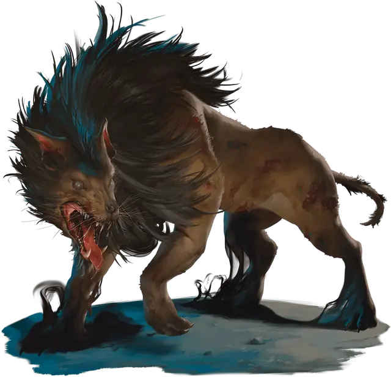

Лютый ворг
Dire Worg
Огромная Фея, Нейтральная Злая

Класс Защиты 16 Инициатива +2 (12)
Хиты 147 (14к12 + 56)
Скорость 50 футов
| мод | спас | ||
|---|---|---|---|
| СИЛ | 22 | +6 | +6 |
| ЛОВ | 14 | +2 | +6 |
| ТЕЛ | 18 | +4 | +4 |
| мод | спас | ||
|---|---|---|---|
| ИНТ | 7 | −2 | −2 |
| МДР | 16 | +3 | +7 |
| ХАР | 8 | −1 | −1 |
Чувства Тёмное зрение 120 футов, пассивное Восприятие 21
Языки Гоблинский, Сильван
Опасность 10 (5 900 опыта; БВ +4)
Особенности
Сопротивление магии. Лютый ворг совершает с Преимуществом спасброски от заклинаний и прочих магических эффектов.
Действия
Мультиатака. Ворг совершает три атаки Укусом.
Укус. Бросок рукопашной атаки: +10, досягаемость 5 фт. Попадание: 15 (2к8 + 6) Колющего урона плюс 7 (2к6) урона Ядом, и цель становится Отравлена до начала следующего хода ворга. Пока цель Отравлена, она не может восстанавливать Хиты.
Ужасающий вой (Перезарядка 5–6). Спасбросок Мудрости: Сл 16, каждое существо, кроме воргов, в пределах 30 футов. Провал: 36 (8к8) Психического урона, и цель становится Испугана до начала следующего хода ворга. Успех: Только половина урона.
Бонусные действия
Шаг через пространство. Ворг и существо по его выбору в пределах 5 футов от него телепортируются на расстояние до 30 футов в видимое воргом незанятое пространство.
Бонус мастерства +4
Среда обитания Леса, Луга, Холмы, Страна фей
Сокровища Отсутствуют
Ворги
Злобные волкоподобные хищники
Ворги — беспощадные охотники, которых иногда принимают за гигантских волков. Эти разумные хищники могут говорить и часто издеваются над жертвой, наслаждаясь страхом своей добычи.
Лютые ворги крупнее своих сородичей и умеют издавать невероятно жуткий вой. Они часто охотятся совместно с эттинами, ограми и троллями.